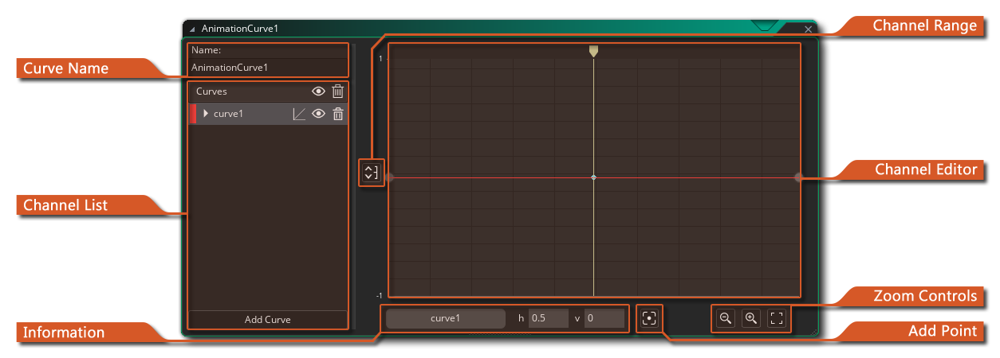
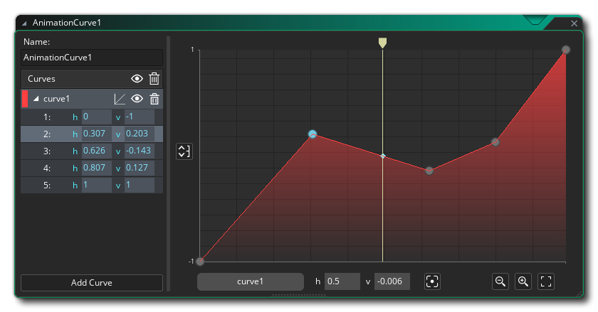
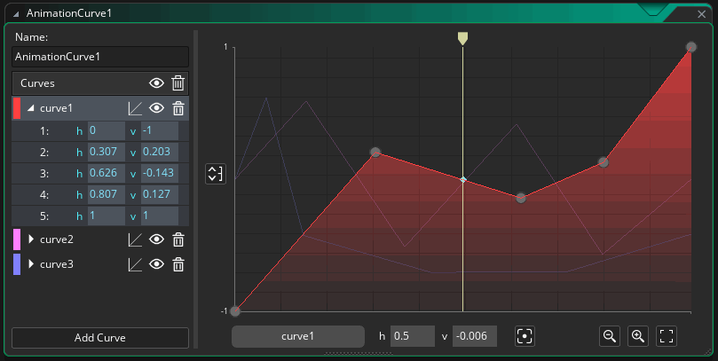
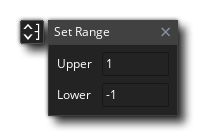
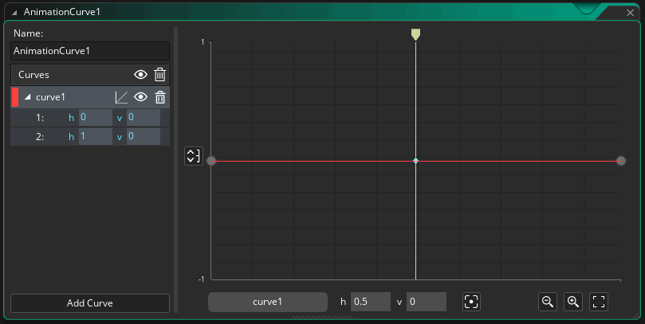
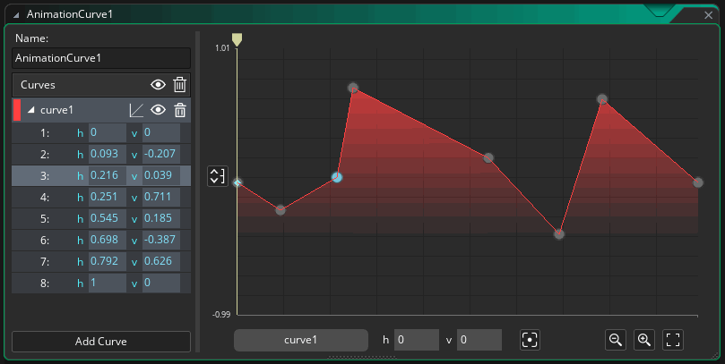
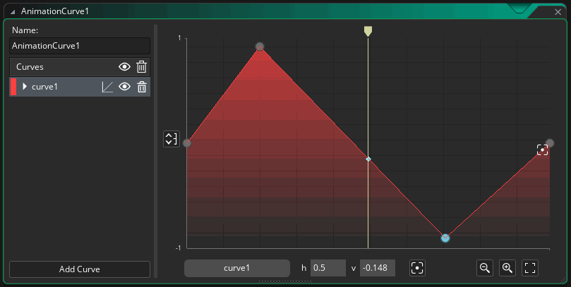
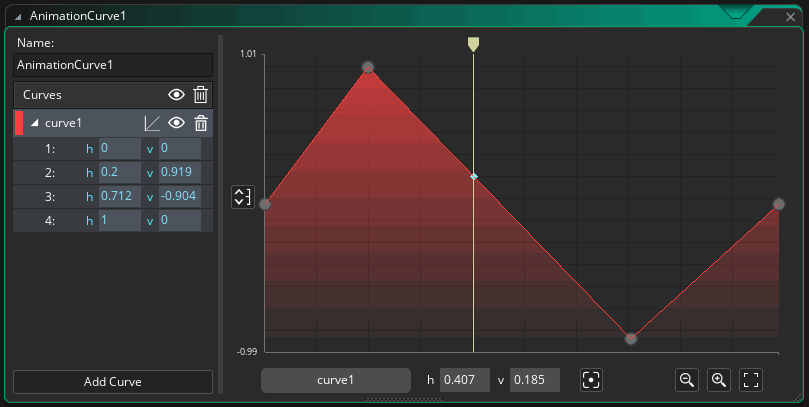

An animation curve is an asset that contains one or more curves that represent how a value changes over time, and can use linear interpolation or smooth interpolation to go between different points in the curve. The values you set can be between -1 and 1 (by default) on the vertical axis and the duration along the horizontal axis is always normalised form 0 to 1, making it easy to target different time ranges using multipliers in your game code.
Animation curves are comprised of "channels" and each channel can have its own curve settings, which permits you to - for example - describe a spacial position with two channels for the x/y position, or a colour gradient with 4 channels to represent a colour format. Animation curve assets can be used when working with sequences and can also be accessed using code, making them a powerful tool when creating your games.
When you first create an animation curve asset the editor window will open and present you with the following sections:
Here you can give your animation curve a unique name (alpha numeric characters and the "_" under-bar symbol only). This name is what will be used to refer to the curve and all its channels when accessing it through code or in a sequence.
The channel list is where you can add and name the different channels that will comprise your animation curve asset. By default when you first create an animation curve, a channel will have been added for you and you can add further channels by clicking the "Add Channel" button at the bottom. Each channel must have a unique name (using alpha numeric characters and the "_" under-bar symbol only), and you can also set the colour for the channel by double clicking
on the colour swatch to the left, which will open the colour picker to let you choose a new colour. To rename the channel, you can do a slow double click
to open a menu where you can choose to rename, change the colour or delete the channel.
Channels can be expanded by clicking the arrow beside the name to show each of the points on the channel curve, and these points can be edited manually by clicking the current value and typing in the new value: 
You can toggle the channel visibility by clicking on the "eye" icon , or delete the channel by clicking the "bin" icon . You can also change the way the channel flows from point to point by clicking the channel type icon . This will switch between linear interpolation or smooth interpolation (smooth interpolation uses centripetal catmull-rom interpolation):

The Information section of the Animation Curve Editor shows you the name of the channel that is currently being edited, and also shows you the horizontal and vertical position of the current point along the curve. These values are calculated by the position of the playhead (the yellow marker) along the length of the channel.
The Channel Range button is used for setting the visual vertical range for the Channel Editor. By default this will be set from -1 to 1, but clicking this button will open the following window: 
Changing these values will change the way the data is represented in the Channel Editor section, permitting you to have higher/lower values along the channel curve than just -1 to 1. Note that this is purely visual and is not used to clamp the values for the channel.
The Channel Editor shows a visual representation of the different channels used in the animation curve. By default, all channels will be shown here, but you can only edit the channel currently selected from the Channel List, which will be highlighted in the editor (all other channels will be represented by a faded line only). You can change the current time position using the "scrub" bar (the yellow bar) by clicking
You can add points directly to the channel curve by moving the mouse close to the main channel line and then clicking when the cursor changes to the "Add Point" tool, and you can then edit these points by clicking and dragging or by changing their values in the expanded channel options in the Channel List:

You can edit multiple points at once by clicking/
+

The zoom controls permit you to expand or contract
the vertical scale of the channel curves in the Channel Editor. You can also click the "Center Fit" button to have the Channel Editor view adjust it's scale to fit all the points on the channel curve within the editor, centered around the mid range of the values:

The Add Point button can be used to add a point at the current "scrub" position (the position of the yellow bar in the Channel Editor). You simply set the position by scrubbing along the channel curve in the channel editor then click this button to add a point. Points added this way can be edited as normal by clicking

For information on the different runtime functions that can be used along with animation curves, please see the following section of the manual: